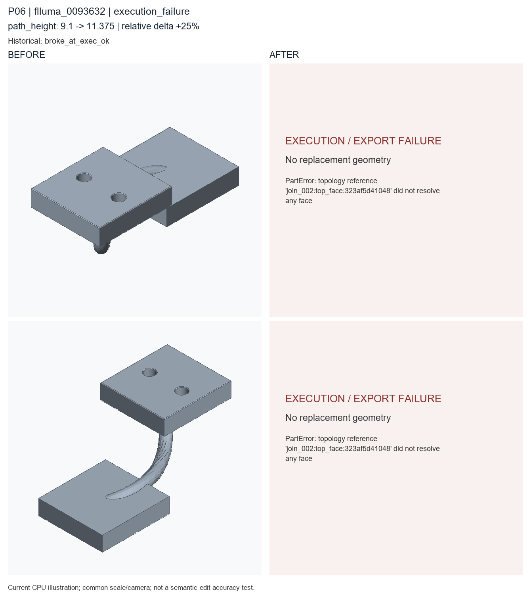

execution_failure; path_height: 9.1 → 11.375. Author semantic confirmation PENDING.

Historical record: broke_at_exec_ok. These are current CPU re-exports, not recovered historical STEP bytes.
Original case metadata and literal examples · Exact code difference · Camera and geometry diagnostics
params = Parameters()
params.add('chamfer_distance', 0.1, min=0.05, max=1.0, semantic_type='chamfer_distance')
params.add('flange_length', 15.1, min=8.0, max=32.0, semantic_type='primitive_length')
params.add('flange_thickness', 3.4, min=2.0, max=8.0, semantic_type='thickness')
params.add('flange_width', 14.4, min=6.0, max=26.0, semantic_type='primitive_width')
params.add('hole_radius', 1.1, min=0.5, max=4.0, semantic_type='hole_radius')
params.add('path_height', 9.1, min=4.0, max=28.0, semantic_type='path_height')
params.add('path_length', 20.1, min=10.0, max=45.0, semantic_type='path_length')
params.add('path_mid_length', 11.14, min=5.0, max=35.0, expression='path_length * 0.552', semantic_type='path_mid_length')
params.add('path_offset', 6.1, min=2.0, max=18.0, semantic_type='path_offset')
params.add('tube_radius', 1.1, min=0.6, max=4.0, semantic_type='sweep_radius')
part = Part('flluma_0006100', category='swept_pipe_bracket', parameters=params, seed=20266614, sample_id='flluma_0006100', units='mm')
sweep_tube = part.sweep_tube(name='swept_pipe_body', radius=params['tube_radius'], path_length=params['path_length'], path_mid_length=params['path_mid_length'], path_offset=params['path_offset'], path_height=params['path_height'], profile_segments=16, semantic_type='sweep_tube')
box = part.box(name='pipe_flange_seed', length=params['flange_length'], width=params['flange_width'], height=params['flange_thickness'], semantic_type='flange')
moved = part.translate(name='place_start_flange', target=box, offset=[0.0, 0.0, -0.495], semantic_type='placement')
moved_2 = part.translate(name='place_end_flange', target=box, offset=[20.1, 6.1, 9.05], semantic_type='placement')
join = part.boolean_join(name='join_start_flange', target=sweep_tube, tool=moved, semantic_type='flange')
join_2 = part.boolean_join(name='join_end_flange', target=join, tool=moved_2, semantic_type='flange')
holes = part.hole_pattern(name='pipe_flange_bolt_holes', target=join_2.top_face(), radius=params['hole_radius'], depth='through', positions=[[-3.62, 0.0], [3.62, 0.0]], semantic_type='bolt_hole_pattern')
chamfer = part.chamfer(name='pipe_bracket_edge_chamfer', target=holes.top_outer_edges(), distance=params['chamfer_distance'], semantic_type='outer_chamfer')
__all__ = ['part']params = Parameters()
params.add('chamfer_distance', 0.1, min=0.05, max=1.0, semantic_type='chamfer_distance')
params.add('flange_length', 15.1, min=8.0, max=32.0, semantic_type='primitive_length')
params.add('flange_thickness', 3.4, min=2.0, max=8.0, semantic_type='thickness')
params.add('flange_width', 14.4, min=6.0, max=26.0, semantic_type='primitive_width')
params.add('hole_radius', 1.1, min=0.5, max=4.0, semantic_type='hole_radius')
params.add('path_height', 11.375, min=4.0, max=28.0, semantic_type='path_height')
params.add('path_length', 20.1, min=10.0, max=45.0, semantic_type='path_length')
params.add('path_mid_length', 11.14, min=5.0, max=35.0, expression='path_length * 0.552', semantic_type='path_mid_length')
params.add('path_offset', 6.1, min=2.0, max=18.0, semantic_type='path_offset')
params.add('tube_radius', 1.1, min=0.6, max=4.0, semantic_type='sweep_radius')
part = Part('flluma_0006100', category='swept_pipe_bracket', parameters=params, seed=20266614, sample_id='flluma_0006100', units='mm')
sweep_tube = part.sweep_tube(name='swept_pipe_body', radius=params['tube_radius'], path_length=params['path_length'], path_mid_length=params['path_mid_length'], path_offset=params['path_offset'], path_height=params['path_height'], profile_segments=16, semantic_type='sweep_tube')
box = part.box(name='pipe_flange_seed', length=params['flange_length'], width=params['flange_width'], height=params['flange_thickness'], semantic_type='flange')
moved = part.translate(name='place_start_flange', target=box, offset=[0.0, 0.0, -0.495], semantic_type='placement')
moved_2 = part.translate(name='place_end_flange', target=box, offset=[20.1, 6.1, 9.05], semantic_type='placement')
join = part.boolean_join(name='join_start_flange', target=sweep_tube, tool=moved, semantic_type='flange')
join_2 = part.boolean_join(name='join_end_flange', target=join, tool=moved_2, semantic_type='flange')
holes = part.hole_pattern(name='pipe_flange_bolt_holes', target=join_2.top_face(), radius=params['hole_radius'], depth='through', positions=[[-3.62, 0.0], [3.62, 0.0]], semantic_type='bolt_hole_pattern')
chamfer = part.chamfer(name='pipe_bracket_edge_chamfer', target=holes.top_outer_edges(), distance=params['chamfer_distance'], semantic_type='outer_chamfer')
__all__ = ['part']